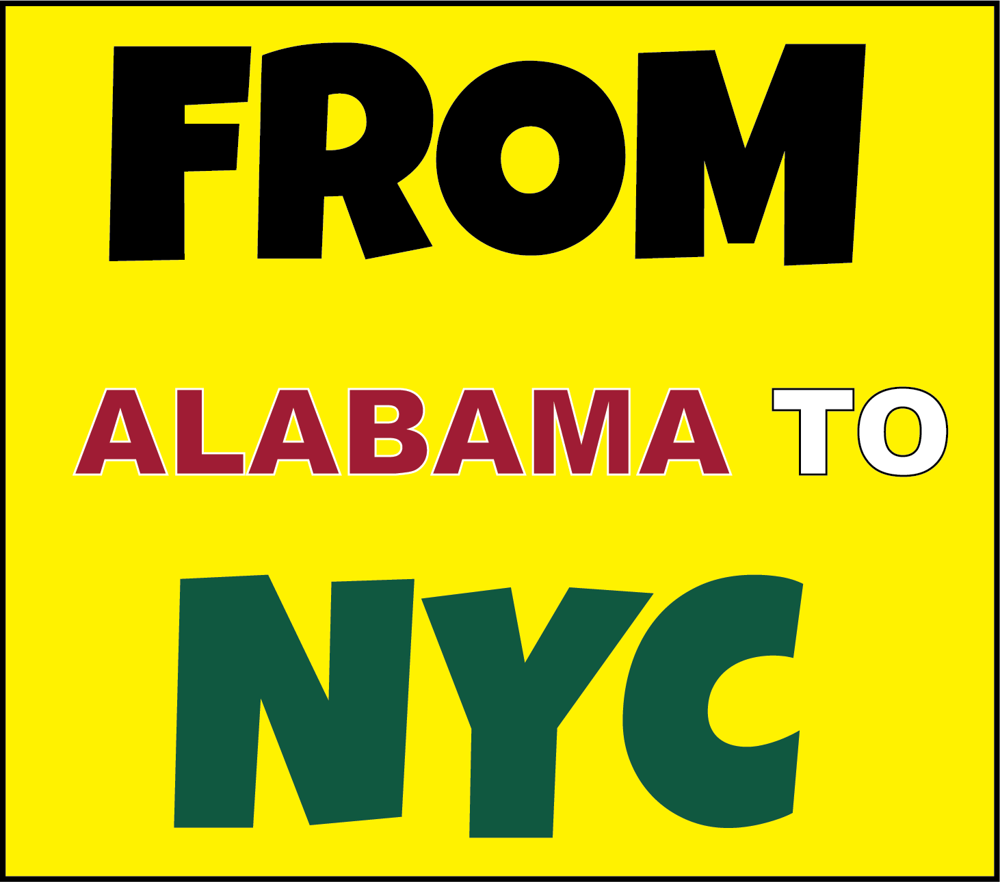
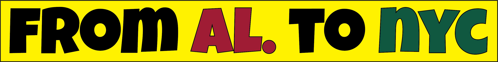
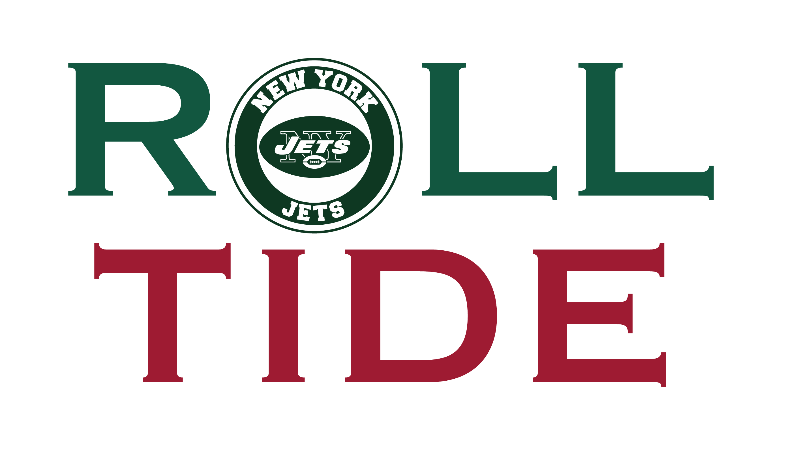
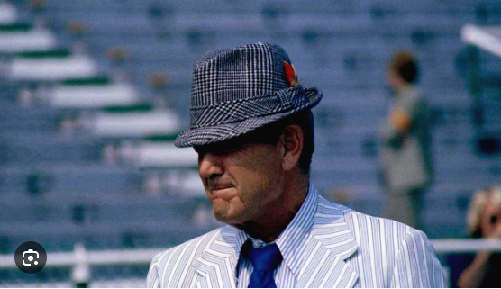

Joe Namath’s legacy is defined by his legendary "guarantee" and shocking victory in Super Bowl III, which legitimized the AFL, paved the way for the AFL-NFL merger, and transformed the quarterback position into a glamorous, high-profile celebrity role. Namath was a statistical pioneer in a notoriously bruising era for quarterbacks. In 1967, he became the first professional quarterback to throw for over 4,000 yards in a single season. His deep passing accuracy and impressive yards-per-completion average revolutionized how teams attacked through the air. Nicknamed "Broadway Joe," Namath transcended sports to become a massive cultural icon of the 1960s and 70s. With his signature long hair, white shoes, and off-field swagger, he proved that athletes could be highly visible, marketable lifestyle brands long before the modern era of sports marketing. Namath entered the Pro Football (American) Hall of Fame in 1985.



Joe Namath cemented his legacy in 1969 when he guaranteed his heavy underdog American Football Team (JETS +18) would win Super Bowl III before defeating the NFL's Baltimore Colts in one of the greatest sports upsets of all time. (FINAL SCORE WAS 16-7) The Super Bowl victory was the first for an AFL franchise, helping dismiss notions that its teams were inferior to the NFL's and demonstrating they would enter the merger as equals. Namath received Super Bowl MVP honors in the game, while also becoming the first quarterback to win both a college national championship (in 1964) and a major professional championship.


Between 1962 and 1964, Joe Namath quarterbacked the Alabama Crimson Tide program under Coach Paul "Bear" Bryant and his offensive coordinator, Howard Schnellenberger. A year after being suspended for the final two games of the regular season, Namath led the Tide to a national championship in 1964. During his time at the University of Alabama, Namath led the team to a 29–4 record over three seasons. Upon graduating from high school in 1961, Namath received offers from several Major League Baseball teams, including the Yankees, Indians, Reds, Pirates, and Phillies, but football prevailed. Namath told interviewers that he wanted to sign with the Pirates and play baseball like his idol, Roberto Clemente, but elected to play football because his mother wanted him to get a college education. Namath enrolled at the University of Alabama, but left before graduating in order to pursue a career in professional football. (College Degree from Alabama earned later in 2007.)